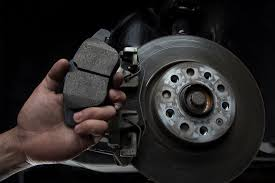

Los síntomas de un nivel bajo de líquidos en un vehículo pueden afectar su funcionamiento. A continuación, algunos de los problemas más comunes: - Aceite bajo: Puede provocar sobrecalentamiento o daño en el motor. - Líquido de frenos bajo: El coche puede frenar con dificultad o el pedal sentirse suave. Podría indicar una fuga. - Anticongelante bajo: El motor se calienta excesivamente y puede emitir vapor. - Combustible bajo: Muchos fallos o apagones del motor se deben simplemente a falta de gasolina.
